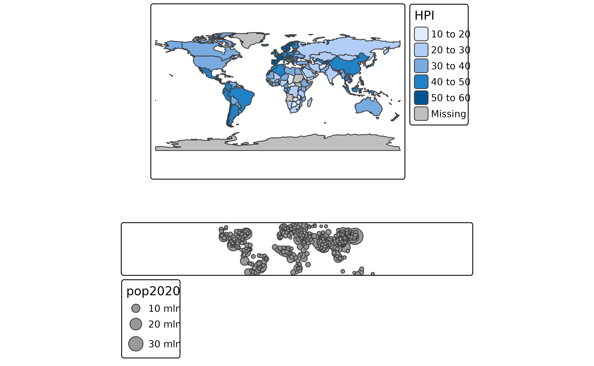

Arrange small multiples in a grid layout. Normally, small multiples are created
by specifying multiple variables for one aesthetic or by specifying the by argument
(see tm_facets()). This function can be used to arrange custom small multiples in a grid layout.
Usage
tmap_arrange(
...,
ncol = NA,
nrow = NA,
widths = NA,
heights = NA,
sync = FALSE,
asp = 0,
outer.margins = 0.02
)
# S3 method for class 'tmap_arrange'
knit_print(x, ..., options = NULL)
# S3 method for class 'tmap_arrange'
print(x, knit = FALSE, ..., options = NULL)Arguments
- ...
tmapobjects or one list oftmapobjects. The number of multiples that can be plot is limited (see details).- ncol
number of columns
- nrow
number of rows
- widths
vector of column widths. It should add up to 1 and the length should be equal to
ncol.- heights
vector of row heights. It should add up to 1 and the length should be equal to
nrow.- sync
logical. Should the navigation in view mode (zooming and panning) be synchronized? By default
FALSE.- asp
aspect ratio. The aspect ratio of each map. Normally, this is controlled by the
aspargument fromtm_layout()(also a tmap option). This argument will overwrite it, unless set toNULL. The default value foraspis 0, which means that the aspect ratio is adjusted to the size of the device divided by the number of columns and rows. Whenaspis set toNA, which is also the default value fortm_layout(), the aspect ratio will be adjusted to the used shapes.- outer.margins
outer.margins, numeric vector four or a single value. If defines the outer margins for each multiple. If will overwrite the
outer.marginsargument fromtm_layout(), unless set toNULL.- x
a
tmap_arrangeobject (returned fromtmap_arrange()).- options
options passed on to
knitr::knit_print()- knit
should
knitr::knit_print()be enabled, or the normalbase::print()function?
Details
The global option tmap.limits controls the limit of the number of facets that are plotted.
By default, tmap_options(tmap.limits = c(facets.view=4, facets.plot=64)).
The maximum number of interactive facets is set to four since otherwise it may become very slow.
Examples
tm1 = tm_shape(World) + tm_polygons("HPI")
tm2 = tm_shape(metro) + tm_bubbles(size = "pop2020")
tmap_arrange(tm1, tm2)
